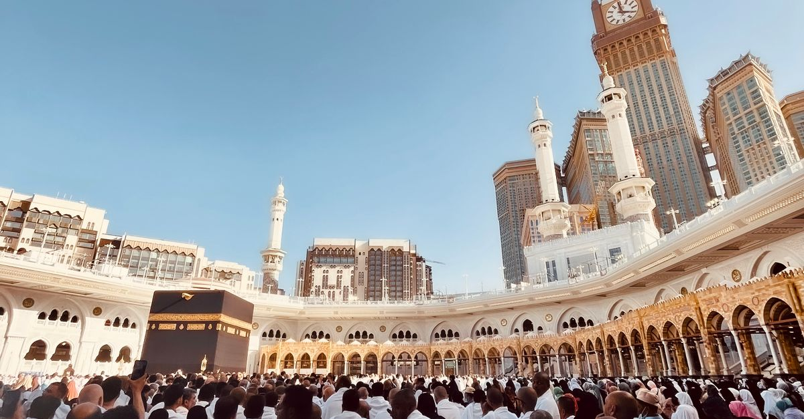

Nusuk App · Complete Guide
Nusuk App Guide — How to Use the Nusuk App (Umrah & Rawdah Permits, Competition Codes)

The Nusuk app is the official app of Saudi Arabia's Ministry of Hajj and Umrah. It is the one app almost every pilgrim now needs: through it you book Umrah permits, Rawdah (Riyadh al-Jannah) permits for the Prophet's Mosque in Madinah, Hajj services and permits to visit the holy places. The official Nusuk site reports more than 26 million app downloads, over 130 services, more than 17 million Umrah permits and more than 13 million Rawdah permits issued through the platform. Behind every booking is a simple intention — Allah says: "And complete the Hajj and Umrah for Allah" (Qur'an 2:196).
Getting started:
- Step 1 — Download the official app. Search for "Nusuk" in the App Store (iPhone) or Google Play (Android), or follow the download links on the official site, nusuk.sa. Check that the publisher is the Ministry of Hajj and Umrah — beware of imitation apps with a similar name or logo.
- Step 2 — Create your account. Register with your own details and complete the verification steps the app asks for.
- Step 3 — Keep your documents ready. Have your passport and your visa details (Umrah visa or tourist visa) at hand — you will need the numbers exactly as printed when you complete your profile and book permits.
Booking an Umrah permit — step by step:
- Step 1 — Open the Nusuk app and sign in to your account.
- Step 2 — Choose the Umrah permit service on the home screen.
- Step 3 — Select the visitors — yourself, and any companions linked to your account.
- Step 4 — Pick an available date and time slot and confirm the booking.
- Step 5 — Your permit appears in the app, with its details and QR code. Show it whenever it is asked for at the Grand Mosque.
Permit rules — how far ahead slots open, and how often a permit can be booked — change from time to time. Always check the app itself for the current slot rules before planning around them.
Booking a Rawdah permit — step by step:
- Step 1 — In the app, open Prophet's Mosque Services.
- Step 2 — Tap "Praying in the Noble Rawdah". Men and women have separate services and separate visiting times — choose the correct one, because a permit booked under the wrong category will not be accepted at the gate.
- Step 3 — Select the visitors, then pick an available date and time.
- Step 4 — Confirm and issue the permit — it appears in the app straight away.
- Step 5 — On the day: go to the gate shown on your permit and arrive on time. Your permit is checked at the gate before you enter the Rawdah.
Using Nusuk Free Umrah Competition codes in the app:
- Step 1 — Open the Nusuk app and tap "Start the challenge".
- Step 2 — Open the Keys tab.
- Step 3 — Paste an NG- code — for example one of the free community codes listed on this site — into the "Add code to get new key" box.
- Step 4 — Tap "Check the code", and the key is added to your account.
How keys work: you receive one free key every day. You earn one extra key each time you use someone else's code, and one extra key each time someone uses your code — but each pair of people can swap codes only once. Every key lets you answer one competition question, and a correct answer enters you into that day's draw for a free Umrah trip.
Practical tips:
- Use a stable internet connection when booking — a slow connection can lose a slot while the page loads.
- Screenshot every permit as soon as it is issued; the mobile signal around the mosques can be weak when you need to show it.
- Book the Rawdah early — Rawdah slots fill very fast, so start checking the app as soon as your dates open.
- Keep app notifications on, so you do not miss slot openings, waitlist updates or changes to your permits.
- Keep the app updated to the latest version, and make sure the name and passport number on your permit match your documents exactly.
Quick questions:
- Is the Nusuk app free? Yes — downloading the app and booking Umrah and Rawdah permits in it is free. Never pay anyone for a permit.
- Is EasyNusuk the official Nusuk website? No. EasyNusuk is an independent community site that shares guides and community competition codes. The official app and websites belong to the Saudi Ministry of Hajj and Umrah.
- Can I perform Umrah or enter the Rawdah without a permit? No — book your permit in the app first, arrive at your booked time, and show the permit at the gate when it is checked.
Sources: Nusuk — Official Site ↗ · Nusuk Services Portal ↗